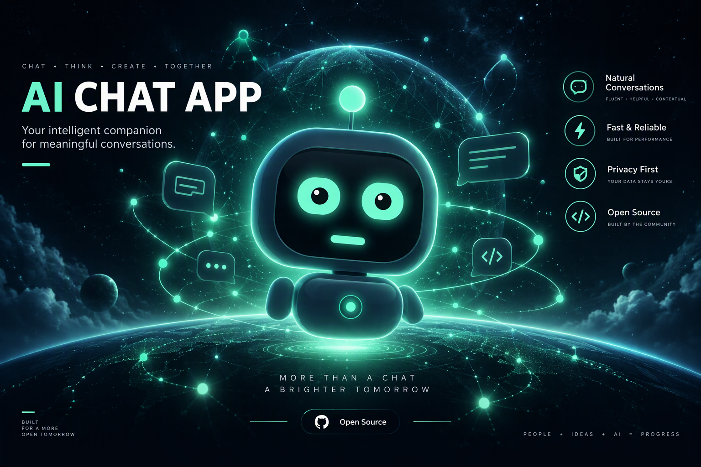

Votre assistant IA,
chez vous.
Pocket LAN fait tourner un assistant conversationnel directement sur votre machine grâce à LM Studio. Un avatar animé, une voix, et vos discussions qui ne quittent jamais votre réseau local.
Aucune API payante. Aucun abonnement. Vos données restent chez vous.
✨ Tout ce qu'il faut, rien de superflu
Installez, lancez, discutez. Pocket LAN s'occupe du reste.
Chat IA local
Les réponses sont générées par LM Studio sur votre machine, sans service cloud.
Deux avatars
Pocket ou Nova, avec voix féminine, tous deux synchronisés avec la parole.
Réponses en direct
Le texte arrive mot à mot, comme dans un vrai échange.
Voix intégrée
La synthèse vocale du navigateur lit les réponses à haute voix.
Conversations gardées
Votre historique est enregistré automatiquement dans une base SQLite locale.
Réseau local
Utilisez la même IA depuis votre PC, votre téléphone ou votre tablette.
Mises à jour simples
Une bannière vous prévient ; un clic et le jeton affiché dans la console suffisent.
Un clic pour démarrer
install.bat puis run.bat : pas de ligne de commande à connaître.
🚀 Installation en 4 étapes
Comptez quelques minutes. Aucune configuration manuelle n'est requise.
Installer Python
Téléchargez Python 3.11 ou plus récent sur python.org.
⚠️ Cochez « Add Python to PATH » pendant l'installation.
Installer LM Studio
Téléchargez LM Studio, téléchargez un modèle compatible (Qwen, Llama, Mistral, Gemma, Phi…), chargez-le puis activez son serveur local.
Port attendu : http://localhost:1234
Installer Pocket LAN
Récupérez le dépôt puis double-cliquez sur install.bat. Le script crée l'environnement Python, installe les dépendances et vérifie que LM Studio répond.
git clone https://github.com/k-gou09/pocket-lan.git
cd pocket-lan
install.batDémarrer et discuter
Double-cliquez sur run.bat, puis ouvrez http://localhost:8000. Choisissez votre avatar dans les réglages et lancez la conversation.
data/admin_token. Rien à configurer. Il ne sert qu'à autoriser les mises à jour depuis l'interface ; supprimez le fichier pour en générer un nouveau.
🎤 À propos de la reconnaissance vocale
Pocket LAN utilise l'API de dictée fournie par le navigateur. Ses limites viennent du navigateur, pas de l'application :
- une action utilisateur est nécessaire pour activer le micro ;
- certains navigateurs désactivent l'API ;
- une connexion Internet est généralement requise ;
- le comportement varie selon Chrome, Edge et Firefox.
⚙️ Architecture
Une chaîne courte et locale : aucune génération n'est envoyée à un service externe.
Pocket LAN (navigateur)
▼
Serveur FastAPI
▼
LM Studio
▼
Modèle IA local
8000 dans le pare-feu Windows.
🎬 Démonstration
Le lancement, l'avatar animé, une question, le streaming de la réponse et la synthèse vocale en quelques secondes.